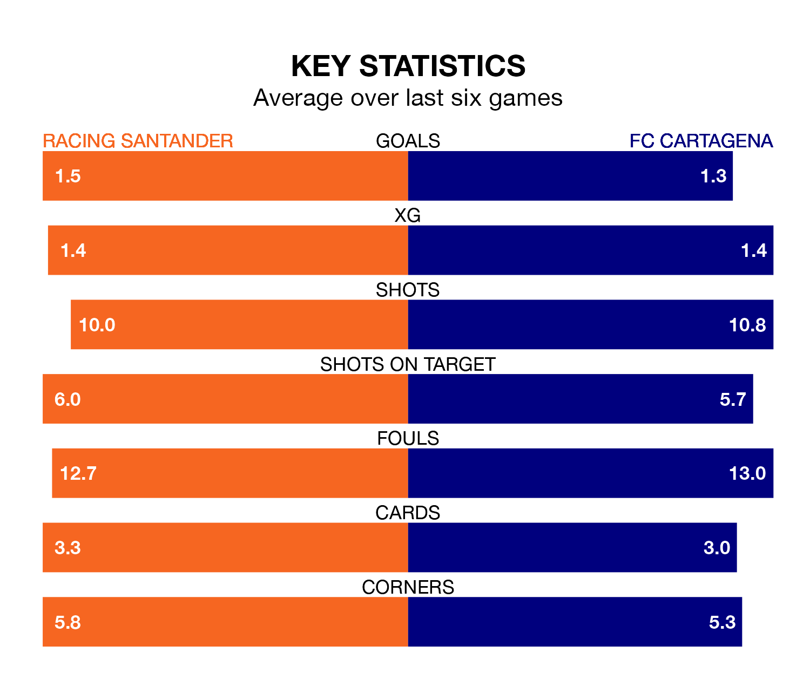

Struggling FC Cartagena face Racing Santander away at Campos de Sport de El Sardinero on Sunday looking to build on a win in their last league outing.
After securing all three points with a 4-1 victory over Villarreal B on January 14, Cartagena sit 21st in the Segunda División.
They travel to play a Racing side eighth in the standings, who lost in their last match, 2-0 against SD Eibar, on January 12.
With 36 goals in 22 games so far this season, Racing are the league's joint-highest scorers with 1.6 goals per game. But they are conceding more than average too, letting in 31 goals at a rate of 1.4 per game.
Cartagena, meanwhile, are below average scorers, with 1.0 goal per game, compared to a league average of 1.2. They have conceded 1.6 goals per game.
In Gerard Fernández Castellano, the hosts have the league's sharpest shooter so far this season. He has notched 10 goals in 21 appearances.
His goal rate of one every 141 minutes is quicker than that of Alfredo Ortuño Martínez, the away side's top scorer with a goal every 249 minutes, and a total of six goals in 20 games.
In the last three years, Racing and Cartagena have played each other on three occasions. Racing won all of them.
Their last meeting was on October 14, when Racing won 3-2 away.
Racing are in mixed form in the Segunda División, with two wins and three draws from their last six games.
With three wins and a draw over that period, Cartagena's form is slightly better – they have taken 10 points from 18, compared to Racing's nine.
Updated: 06:13 (UTC), 18/01/24